גרסה צדדית, פרימיום, ליד גרסה 3.1: גוף קרמי רך עם קצוות מעוגלים, רצועה של 22 מ״מ שנכנסת לחריץ בכל קצה, משטח פלדה רציף שמחולק בקווים דקים, צד יד עם קרמיקה שחורה ועדשת ספיר, טבעת פלדה בגב היד, רצועה פשוטה שמתחלפת ב-S, M ו-L, ושלושה צבעים. אותו מכשיר בפנים. המודל בודק את עצמו: אין התנגשויות, וכל הגופים תקינים.
CYPHIX Band α · חומרה · עודכן 15.11.2026
תכנית הורדת סיכונים
בודקים כל סיכון בדרך הזולה ביותר, ורק כשהוא עובר משלמים על השלב הבא. חמישה שלבים, מהמחשב ועד יחידה שאפשר לענוד.
עכשיו
שלב 0: סוגרים את התכנון על המחשב
- חדש: גרסה צדדית בשפה של מוצרי אפל, ליד גרסה 3.1. אותו מכשיר בפנים, חוץ חדש.
- קושחת שלב 2 מוכנה ונבנית בלי שגיאות. היא עוד לא רצה על חומרה.
- הסכמה ואימות מידות הרכיבים נקטעו כשמכסת השימוש נגמרה. מה שנעשה שמור, והם ימשיכו.
גרסה צדדית: פרימיום
בפנים זה אותו מכשיר: אותו לוח, אותה סוללה, אותם חיישנים ואותן מידות. רק החוץ השתנה, בשפה של מוצרי אפל: גוף אחד רך, פלדה רציפה בלי מסגרות, ואין זיזים ואין מוט על האי. הסגירה עברה לגב היד. גרסה 3.1 נשארת כמו שהיא, בפרק הבא.
טוען את המודל
גוררים לכל כיוון כדי לסובב, גם עם האי למטה. צביטה או גלגלת לזום. "גרסה 3.1" מחליף לגרסה הקודמת, ו"רצועה שקופה" מראה את המוליך שבתוכה.
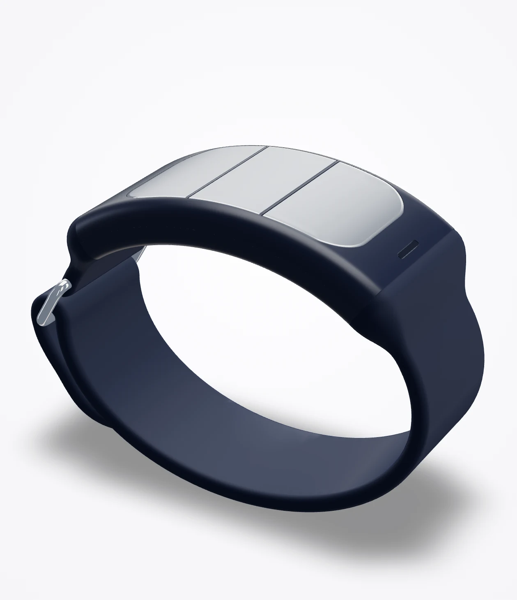
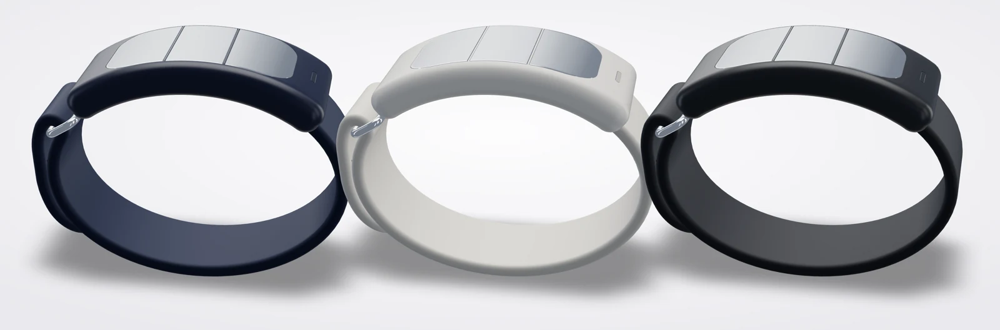
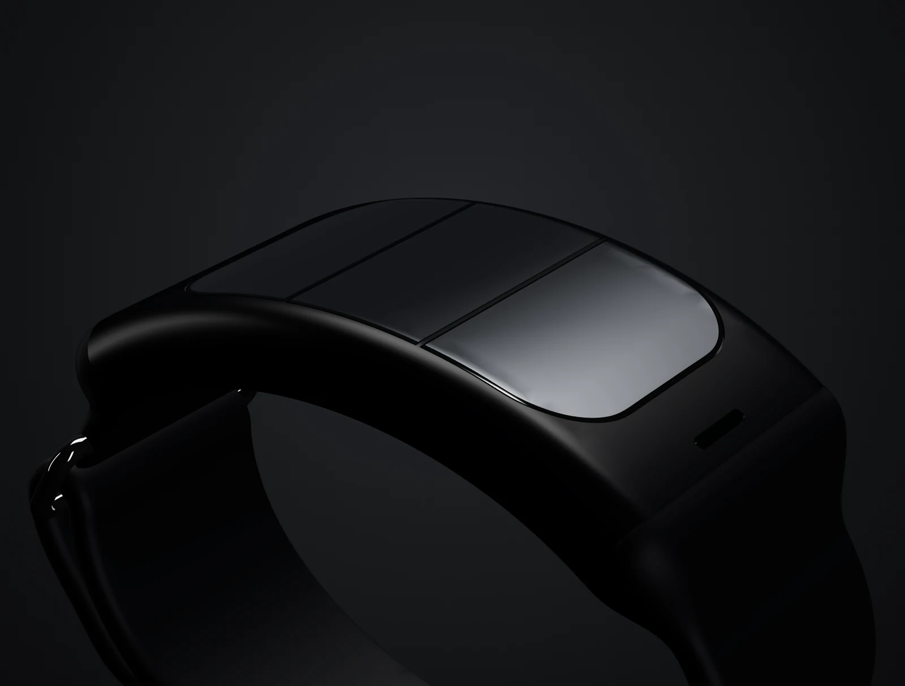
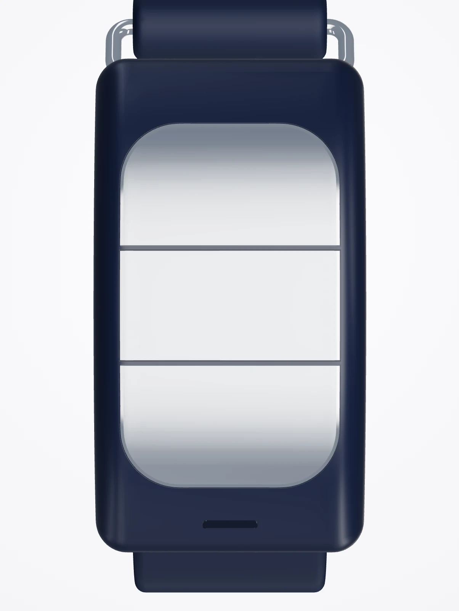
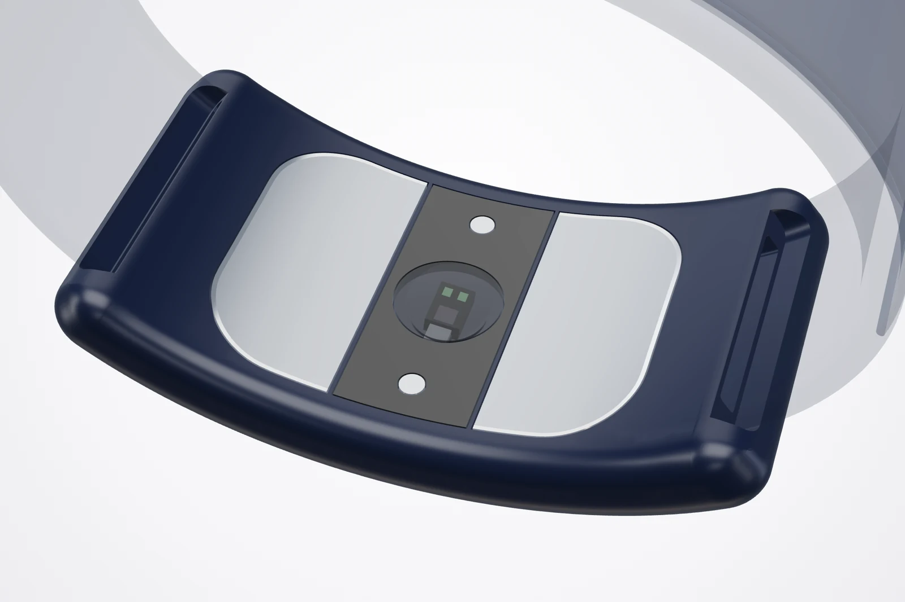
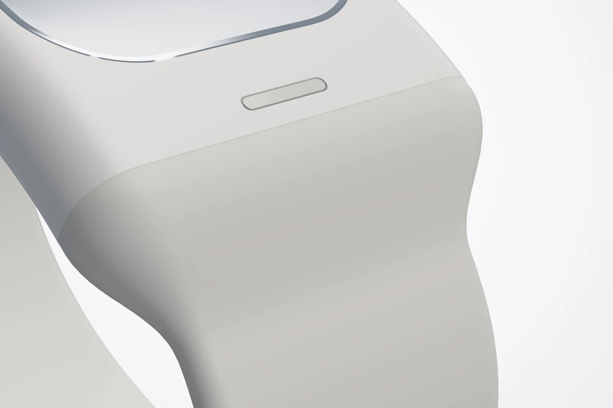
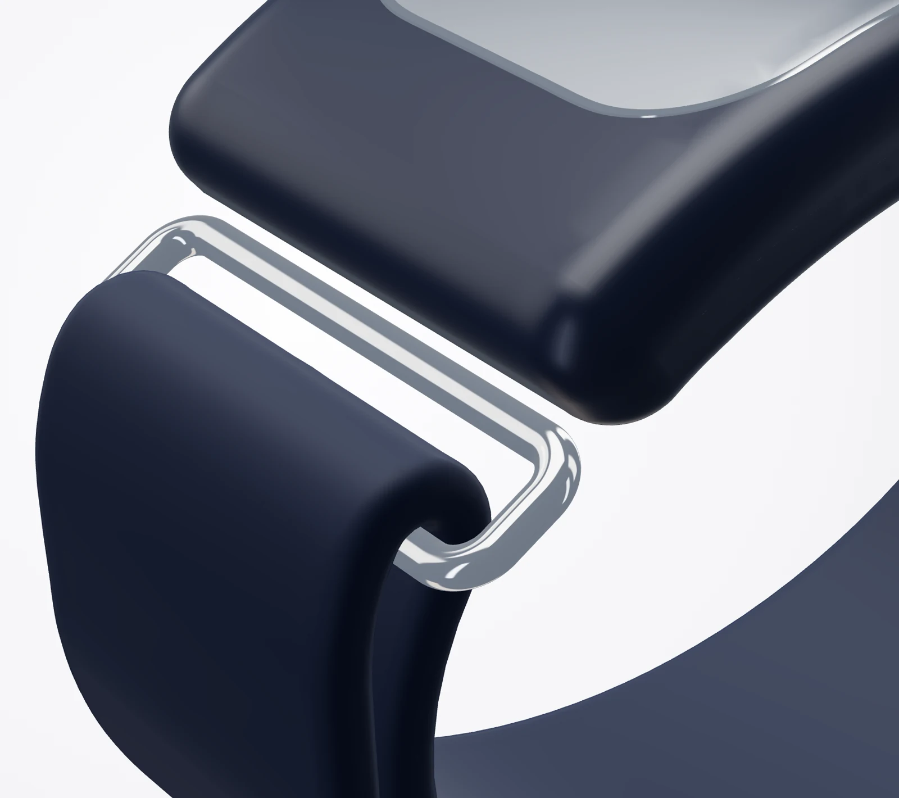
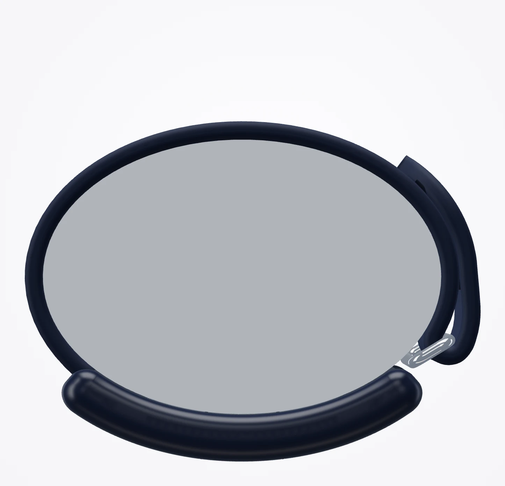
מה עושה אותה פרימיום
- גוף אחד רך. קרמיקה מט (זירקוניה) בצבע הרצועה. אותו חתך לכל האורך, ושני הקצוות זהים ומתעגלים בקשת אחת. בלי זיזים, בלי פינים ובלי מוט.
- הרצועה נכנסת לתוך הגוף. חריץ בכל קצה, כמו רצועת שעון שנכנסת לגוף השעון, בין שתי פינות מלאות ומעוגלות. הרצועה ברוחב 22 מ״מ, צרה מהגוף כמו רצועת שעון, וכך האי הוא התכשיט.
- פלדה רציפה. בצד הרגל יש משטח פלדה אחד ומעוגל, ושני קווים דקים בצבע הגוף מחלקים אותו לשלוש אלקטרודות. קו מלוטש אחד מקיף את כולו, במקום מסגרת סביב כל אלקטרודה.
- צד היד באותו קו מתאר. שתי אלקטרודות LA, וביניהן קרמיקה שחורה מבריקה עם עדשת ספיר. העדשה בולטת 0.35 מ״מ כדי לגעת בעור, ולידה שני מגעי טעינה שטוחים.
- טבעת פלדה בגב היד. הרצועה עם המוליך נגמרת בטבעת מלוטשת. הרצועה השנייה עוברת דרכה ומתקפלת על עצמה בסקוץ', באותו מקום שבו כל שעון נסגר. לטבעת יש תפקיד: הרצועה מסתובבת סביבה. והקצה מונח על הרצועה הפשוטה, כך שהוא אף פעם לא מכסה את RA1 ו-RA2.
- נורה שלא רואים כשהיא כבויה. קו מבריק בצבע הגוף, שנדלק רק כשצריך.
- שלושה צבעים. כחול המותג, לבן חם וגרפיט. הפלדה כסופה בכולם, כי האלקטרודות הן אותה מתכת בכל הגרסאות.
מה זה פותר מגרסה 3.1
- שלושה אורכי רצועה. הרצועה הפשוטה ננעלת בקצה החופשי ומתחלפת: S, M או L. הרצועה עם המוליך תמיד באותו אורך.
- אלקטרודות גדולות יותר על הרגל. LL1 ו-LL2 הן 394 ממ״ר כל אחת, לעומת 290 בגרסה 3.1, כי הפלדה מכסה כמעט את כל הפנים. RLD 287, וכל LA 296.
מה המחיר
- עלות. מארז קרמי עולה פי כמה ממארז פלסטיק, ומדביקים אותו במקום לרתך. חלופה זולה: פלסטיק הנדסי באותה צורה ובאותו צבע, ששומר על רוב המראה.
- אורך. 52 מ״מ, כמו גרסה 3.1 עם הזיזים. המכשיר לא קטן יותר, הוא נראה שקט יותר.
- אנטנה. כמו בגרסה 3.1, יש פלדה בשני הפנים. האנטנה נשארת בדפנות ובקצוות הקרמיים, שלא חוסמים רדיו. עדיין צריך מהנדס RF.
- משטחי RA זזו 2 מ״מ לכיוון האי, כדי לפנות מקום לטבעת. עדיין מילימטר ביניהם, וכל אחד עם קו משלו.
- מה שתמונה לא מוכיחה. מוצר פרימיום אמיתי נקבע בסבולות, בגימורים ובדוגמאות חומר ביד. את זה בודקים עם מעצב תעשייתי ויצרן.
52 × 30 × 7.2 מ״מ
האי, מקצה לקצה
394 ממ״ר
כל אלקטרודת LL
296 ממ״ר
כל אלקטרודת LA
3 צבעים
אותה פלדה בכולם
העיצוב התעשייתי, גרסה 3
השפה של ההדמיה שלך: אי ממוסגר, שלוש אלקטרודות בצורת גלולה עם שפה מלוטשת, גוף גרפיט ורצועה בכחול-אפור. מוט רק בקצה שהרצועה מתלפפת סביבו. כל מה שתוקן בגרסה 2 נשאר. בתצוגה התלת-ממדית למעלה, הכפתור "גרסה 3.1" מציג אותה.


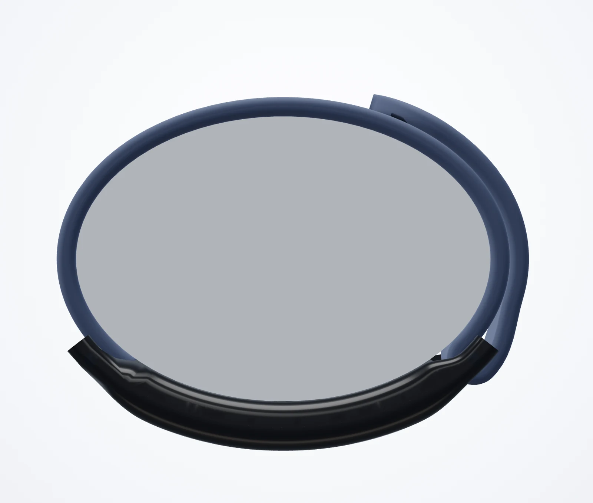

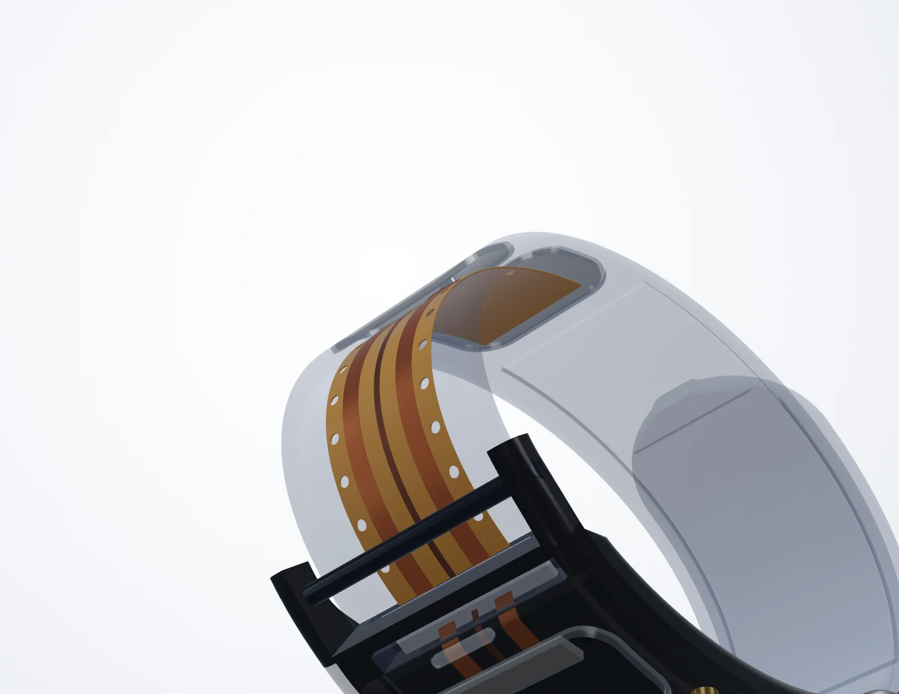

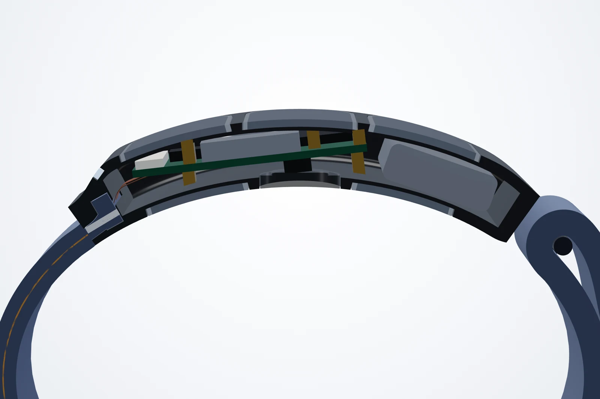
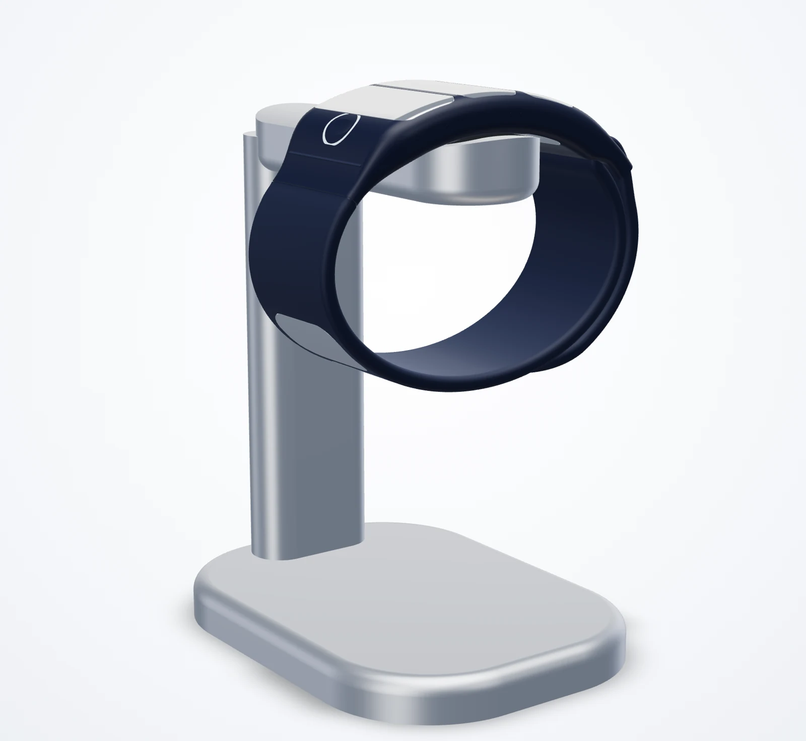
מה לקחתי מההדמיה שלך
- מוט רק איפה שצריך. בקצה החופשי שני זיזים קצרים ומוט, וקצותיו נראים בפינות, כמו אצלך. שם הרצועה עוברת סביב המוט ונסגרת בסקוץ'. בקצה הקבוע אין מוט ואין זיזים, כי שום רצועה לא מתלפפת שם: האי מצטמצם לרוחב הרצועה, והרצועה יוצאת ישר מתחתיו, באותו קו פנימי, ובתוכה המוליך. הכתף הארוכה של גרסה 2 ירדה.
- שלוש אלקטרודות בצורת גלולה, זו לצד זו בתוך מסגרת דקה. כל אחת היא חתיכת פלדה אחת: פנים מט ושפה מלוטשת שתופסת את האור. אותו סגנון בשני משטחי ה-LA ובשני משטחי ה-RA.
- צבעים. גוף גרפיט ורצועה בכחול-אפור.
- בלי כפתור בולט. קו אור קצר במסגרת, על קו האמצע. המסגרת סביבו היא אזור מגע, והמכשיר מתעורר גם כשנוגעים באלקטרודות. זו הצעה: אם תעדיף לחיצה אמיתית, באותו מקום אפשר מתג מתחת לממברנה.
מה לא כמו בהדמיה, ולמה
- הגודל. בהדמיה האי 35 × 26 × 6 מ״מ, והלוח והסוללה לא נכנסים בזה. כאן הוא 46 × 30 × 7.2, ועם הזיזים 52. זו השפה של ההדמיה בגודל שיצא מהחישוב.
- האלקטרודות רחבות יותר. בהדמיה כל אחת בערך 147 ממ״ר. כאן 290, כי ביקשת אלקטרודות גדולות יותר. לכן הגלולות פחות צרות מאשר אצלך.
- האלקטרודות לא שחורות. בגרסה הקודמת ציירתי ציפוי כהה על פנים האלקטרודה ופלדה חשופה בשפה. זה לא טוב: שתי מתכות שונות על אותה אלקטרודה יוצרות ביניהן מתח קטן על העור, ורוב הציפויים השחורים מוליכים חשמל רע. עכשיו כל אלקטרודה היא מתכת אחת, והפנים המט נראים אפורים כהים.
החומרים
- אלקטרודות: פלדת אל-חלד 316L, אותה מתכת בכל שבעת המשטחים: LL1 · LL2 · RLD · LA ×2 · RA1 · RA2. זה חשוב: מתכות שונות על אלקטרודות שונות יוצרות הפרשי מתח קבועים ביניהן, ואלה מסתירים את האות. פלדה 316L היא החומר הנפוץ באלקטרודות יבשות של מכשירי א.ק.ג. אישיים ושל שעונים. היא מתאימה למגע ממושך עם עור, עומדת בניגוב באלכוהול, ולא מתבלה.
- החולשה שלה: היא מייצרת קצת יותר רעש תנועה מאלקטרודה רפואית עם ג'ל (כסף/כסף כלורי). להקלטה של 10 שניות, עם הכניסות של ה-ADS1294, זה מספיק טוב. שלב 1 בודק את זה בדיוק.
- ניקל: בפלדה 316L יש ניקל, והיא משחררת ממנו מעט מאוד. היא בשימוש רחב בשעונים. קונים רק סוג שעומד בתקן האירופי לשחרור ניקל (EN 1811).
- אם תרצה בהמשך: טיטניום עם ציפוי TiN מוליך מצוין ובלי ניקל, אבל בצבע זהב. כסף/כסף כלורי נותן את האות הטוב ביותר, אבל נשחק ולא מתאים למכשיר משותף. ציפוי כהה אפשרי רק אם הוא מכסה את כל האלקטרודה ועובר בדיקת התנגדות מול הפלדה.
- שאר החומרים: רצועה מ-FKM (גומי פלואורי, כמו ברצועות שעונים טובות), חלון ספיר, מגעי טעינה מצופי זהב, מוט פלדה. את פלסטיק המארז בוחרים עם היצרן לפי הריתוך האולטרסוני והתאמה ביולוגית למגע עם עור.
מה נשאר מגרסה 2
- סימטריה, PPG ומדחום. האי סימטרי לשני הצדדים (נבדק עד 0.0 מ״מ). חלון ספיר בקוטר 8.6 מ״מ במרכז הצד שעל היד, ובו חיישן PPG ומדחום עור.
- משטחים חלקים. כל חתך הוא עקומה חלקה, וכל שינוי גודל עובר בלי שבר.
- סקוץ', משטחי RA צמודים, סוללה מחוברת. מרווח של מילימטר בין RA1 ל-RA2, כל אחד עם קו משלו. הסוללה מחוברת ללוח בשני פסי ניקל.
- טעינה. שני מגעים משני צידי החלון, על מעמד, בכל כיוון. המגנטים במעמד.
- אי קעור. רדיוס 44 מ״מ במרכז.
- סיבוב מלא בצפייה התלת-ממדית, וכפתור "מלמעלה".
46 × 30 × 7.2 מ״מ
האי, בלי הזיזים
290 ממ״ר
כל אלקטרודה על הרגל
265 ממ״ר
כל אלקטרודת LA
R 44 מ״מ
קעירות הפנים שעל היד
מה עוד פתוח בעיצוב
- אנטנה. מה שאין בו מתכת הוא המסגרת, הדפנות והקצוות. ההצעה: אנטנה מודפסת על פנים המסגרת, כמו ברוב השעונים החכמים. צריך להחליט עם מהנדס RF, ולמדוד ביחידה הראשונה.
- סקוץ' ומטופלים משותפים. קשה יותר לחטא מגומי חלק. צריך לבחור סקוץ' רפואי שעומד בניגוב באלכוהול, או קצה רצועה שמחליפים.
- אורך האי. הוא מצויר ללוח המצומצם, 25 × 26 מ״מ. לוח ראשון מרווח ארוך בכ-7 מ״מ, והאי איתו.
- שלושה אורכי רצועה מכסים היקף יד מ-130 עד 210 מ״מ, כך שהקצה לעולם לא מגיע למשטחי ה-RA.
- ליטוש צורני. זה תכנון הנדסי מדויק, ועדיין לא עבודה של מעצב תעשייתי. כדאי שמעצבת תלטש את המשטחים על בסיס הקבצים האלה.
בדיקת ההתאמה הראשונה (מודל הקופסאות)
המודל הקודם, שנועד רק לבדוק שהלוח, הסוללה והרכיבים נכנסים בחלל בלי התנגשויות. הוא לא עיצוב.


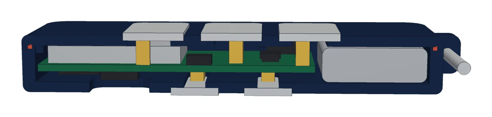
הגודל שיצא מהחישוב
שטח הלוח חושב מרשימת הרכיבים, הסוללה מצריכת הזרם, והעובי מהערימה של מה שיושב זה על זה.
48.9 × 30 × 7.5 מ״מ
המודול, עם לוח ראשון מרווח
42.1 × 30 × 7.5 מ״מ
אחרי צמצום הלוח
100 mAh
כשבועיים במרפאה, 60 הקלטות ביום
כ-30 גרם
עם הרצועה. המותר במפרט: 40
| מקור | אורך × רוחב × עובי, מ״מ | מה זה |
|---|---|---|
| ההדמיה | 35 × 26 × 6 | לא חושב מהרכיבים |
| המפרט | 45 × 30 × 12 | לא חושב מהרכיבים |
| החישוב, סוללה לצד הלוח | 48.9 × 30 × 7.5 | ההמלצה: דק |
| החישוב, סוללה מעל הלוח | 36 × 28 × 11.9 | קצר אבל עבה |
יצא שטח קרוב למפרט ועובי קרוב להדמיה. הקלטה של 10 שניות צורכת מעט מאוד, ולכן מספיקה סוללה של 100 mAh במקום 150–300 שבמפרט, וזה מה שמאפשר מודול דק. העובי עלה ב-0.2 מ״מ כשנכנס חיישן ה-PPG מתחת ללוח. החישוב הזה הוא לקופסה שטוחה. באי המעוקל החלקים הגבוהים יושבים באמצע, שם יש הכי הרבה גובה, ולכן האי נשאר 7.2. המספרים יתעדכנו כשכל מידה תאומת מול דף היצרן.
השלבים
כל שלב עונה על שאלה אחת. אם התשובה לא טובה, מתקנים לפני שממשיכים, והכסף של השלב הבא לא יצא.
0
על המחשב
בלי עלותבעבודה
- השאלה
- האם התכנון סגור: הגודל מחושב, הסכמה מלאה, הרכיבים זמינים, והכול נכנס במארז?
- איך
- חישוב גודל וסוללה, מודל CAD מוצק, סכמה ורשימת רכיבים, סימולציה של הכניסות.
- עובר אם
- אין שגיאות בבדיקת החוקים, כל רכיב ניתן לקנייה, ואין התנגשויות במודל.
- מי
- אני.
1
אלקטרודות יבשות על האב-טיפוס הקיים
כמעט בלי עלותהבא בתור
- השאלה
- האם משטחי מתכת יבשים בגודל המתוכנן נותנים אק״ג קריא? זה הסיכון הגדול ביותר, ואפשר לבדוק אותו כבר היום.
- איך
- מחליפים את מדבקות הג׳ל במשטחי נירוסטה ומקליטים עם האפליקציה הקיימת.
- עובר אם
- רואים פעימה ברורה בכל ליד, והרעש בין הפעימות קטן לפחות פי 10 מגובה הפעימה.
- מי
- אתה מחבר ומקליט לפי הוראות שאכתוב. אני מנתח את ההקלטות.
2
השבב החדש על השולחן
כמעט בלי עלותבבדיקה: חיווט ישיר של הלוח שכבר יש לך
- השאלה
- האם משפחת ה-ADS1294 וארבעת הערוצים עובדים עם האלקטרודות היבשות, והאפליקציה מציגה את האות?
- איך
- לוח השבב של TI שכבר קנית (ADS1298, אותה משפחה ואותה קושחה), בלי לוח האם שלו ובלי התוכנה של TI. מחווטים אותו ישירות ל-XIAO nRF52840 שלך. הקושחה משדרת בפורמט הקיים, כך שהאפליקציה לא משתנה.
- עובר אם
- הקלטה של 10 שניות מגיעה לאפליקציה מארבעה ערוצים, בלי דגימות חסרות.
- מי
- אני מכין את טבלת החיווט וכותב קושחה. אתה מחווט ומקליט.
3
יחידה לבישה ראשונה
800–1,500 דולר ל-5 יחידותממתין
- השאלה
- האם הלוח הממוזער, המארז, הרצועה והמוליך שבתוכה עובדים יחד על היד?
- איך
- לוחות מורכבים מהמפעל, מארז מודפס, מעגל גמיש ורצועה יצוקה.
- עובר אם
- 10 הקלטות מלאות מתוך 10 על היד, הסוללה מחזיקה כמתוכנן, והמוליך שורד בדיקת כיפוף.
- מי
- אני מכין את קובצי הייצור. אתה מזמין, מרכיב ובודק. מהנדס אלקטרוניקה מבקר את הלוח לפני ההזמנה.
4
סבב תיקונים ובטיחות
800–1,500 דולר, ועוד מעבדהממתין
- השאלה
- האם היחידה בטוחה ויציבה מספיק לניסוי בבית חולים?
- איך
- סבב שני עם התיקונים, מדידת זרם מטופל במעבדה מוסמכת, חומרים עם תיעוד רפואי, בדיקת חיטוי.
- עובר אם
- המעבדה מאשרת את מדידות הבטיחות, והיחידה עומדת בניגוב חוזר באלכוהול.
- מי
- מעבדה מוסמכת והגורם המלווה בבית החולים. אני מכין את התיעוד.
הסיכונים
מסודרים לפי חומרה. לכל סיכון יש בדיקה זולה, והשלב שבו היא נעשית.
הסיכוןאיך בודקים בזולשלב
אלקטרודות יבשות לא נותנות אות נקיבלי אות אין מוצר.
משטחי נירוסטה על האב-טיפוס שכבר עובד, ואחר כך על לוח הניסוי.
1, 2
האלקטרוניקה והסוללה לא נכנסות במודול נוחהגדלים בהדמיה ובמפרט לא חושבו מהרכיבים.
חישוב מהרכיבים האמיתיים, מודל CAD מוצק, ואחריו הדפסה למדידה על היד.
0, 3
השבב החדש ותוכנית ארבעת הערוציםשבב אחר מזה שבאב-טיפוס, וקושחה חדשה.
לוח השבב של TI שכבר אצלך, מחווט ל-XIAO, לפני שמתכננים לוח משלנו.
2
האפליקציה לא מקבלת את האות החדשהאפליקציות נעולות היום על 320 דגימות בשנייה.
מצב תאימות בקושחה: המכשיר החדש משדר בפורמט הקיים. את האפליקציה מעדכנים רק אחרי שהחומרה מוכחת, ובאישורך.
2
המוליך ברצועה נשבר או מתנתקRA1 ו-RA2 יושבות על הרצועה, מעבר לציר.
דגימת מעגל גמיש בבדיקת כיפוף, ויציקת ניסיון בסיליקון.
3
רעש או קליטה חלשה בלוח הממוזעראות של מיקרו-וולטים ליד אנטנה.
הולכים לפי לוח הייחוס של TI, ומהנדס אלקטרוניקה מבקר לפני כל הזמנה.
2, 3
רכיב חסר במלאי, או שהמפעל לא מרכיב אותועיכוב של חודשים.
בדיקת זמינות לכל רכיב לפני שמקבעים את הסכמה, וחלופה לכל רכיב קריטי.
0
זיעה מקצרת בין אלקטרודות, או שהאטימה נכשלתהאות נעלם בשימוש אמיתי.
מרווח מבודד ואטם כבר ב-CAD, ובדיקת טפטוף על יחידה מודפסת.
0, 3
בטיחות המטופל ותקינהתנאי לניסוי בבית חולים.
מתכננים לפי IEC 60601-1 מהיום הראשון: זרם מטופל מוגבל, אין הקלטה בזמן טעינה. מודדים במעבדה.
0, 4
טעות שלי בתכנוןאני לא מודד ולא מלחים.
כל שלב נבדק במדידה אמיתית לפני הבא, ואדם מבקר כל לוח לפני הזמנה.
בכולם
חלקי העבודה
שמונה חלקים שמתקדמים במקביל. ליד כל אחד כתוב מה קורה בו עכשיו.
מערכת
מה המכשיר צריך לעשות, ומה יוצא מזה: גודל, סוללה וזמן פעולה.
בעבודה: חישוב גודל וסוללה
אלקטרודות
צורה, שטח, חומר, והחיבור של כל משטח ללוח.
בעבודה: הוראות לניסוי שלב 1
אלקטרוניקה
סכמה, רשימת רכיבים, לוח ניסוי, ואחריו הלוח הממוזער.
בעבודה: בחירת רכיבים וסכמה
קושחה
התוכנה שרצה על המכשיר: דגימה מהשבב ושידור ב-BLE.
מתחיל עם לוח הניסוי
אפליקציה
ארבעה ערוצים ו-500 דגימות בשנייה.
רק אחרי שלב 2, ובאישורך
עיצוב תעשייתי ומכני
המודול, הרצועה, ומה שעובר בתוך הרצועה, כקבצים לייצור.
בעבודה: מודל מוצק ראשון
ייצור ורכש
קובצי ייצור, הזמנות והרכבה.
מתחיל בשלב 2
בטיחות ותקינה
זרם מטופל, חומרים במגע עם העור, תיעוד לניסוי.
בעבודה: מגבלות הזרם נכנסות לסכמה
מה אני צריך ממך
- ניסוי שלב 1. להחליף את מדבקות הג׳ל במשטחי נירוסטה ולהקליט. ההוראות המלאות כאן למטה.
- לוח ה-ADS1298 של TI. לחבר את ה-XIAO למחשב ב-USB כדי שאצרוב עליו את הקושחה, ואז לחווט לפי ההוראות לשלב 2 שכאן למטה.
- שום קנייה כרגע. לפני כל קנייה אציג מה קונים, כמה זה עולה ולמה.
הוראות לניסוי שלב 1
בטיחות: האב-טיפוס מחובר ב-USB רק למחשב נייד שמנותק מהמטען, או לסוללת גיבוי. אף פעם לא למשהו שמחובר לשקע בזמן שהאלקטרודות על הגוף.
מה צריך
- האב-טיפוס עם חמשת החוטים: RA, LA, LL#1, LL#2, RLD.
- שבע חתיכות נירוסטה. לסבב ראשון מספיק מה שיש בבית: דסקיות נירוסטה M8, ידיות של כפיות, או פס נירוסטה גזור.
- קליפס תנין או הלחמה, לחבר כל חתיכה לחוט שלה.
- מדבקות הג׳ל הרגילות, להשוואה. קרטון קשיח וסרט הדבקה.
הגדלים שבודקים
| משטח | הגודל במוצר | תחליף ביתי |
|---|---|---|
| LL1, LL2, RLD | 7 × 21 מ״מ כל אחד, על הרגל | דסקית M8 |
| LA | שני משטחים של 5.5 × 21 מ״מ על חוט אחד, על שורש כף היד | שתי דסקיות M6 על חוט אחד |
| RA | 9.4 × 19 מ״מ, לאצבעות יד ימין | דסקית M8 |
את שלושת משטחי הרגל מדביקים בשורה על קרטון, במרווח של 2 מ״מ, בסדר LL1, RLD, LL2. זה הסידור שבמוצר.
איך מניחים
- שורש כף יד שמאל: משטחי ה-LA על הצד הפנימי, מוחזקים ברצועת הסקוטש.
- רגל שמאל, על עור חשוף מעל הברך: הקרטון עם שלושת המשטחים. שורש כף היד נח על הקרטון ולוחץ אותו לרגל.
- יד ימין: שתי אצבעות על משטח ה-RA.
- מקליטים 10 שניות באפליקציה, בישיבה, בלי לדבר.
סדר ההקלטות
שלוש הקלטות בכל מצב. בין מצב למצב רושמים שעה, מצב, ומה הרגשת: לחץ חזק או חלש, זיעה.
| מצב | מה עושים | למה |
|---|---|---|
| A | מדבקות ג׳ל, כמו היום | קו הבסיס להשוואה |
| B | משטחים יבשים, עור יבש | המצב האמיתי |
| C | אותו דבר, אחרי ניגוב העור במטלית לחה | המקרה הטוב |
| D | חצי מכל משטח מכוסה בסרט בידוד | כמה הגודל משפיע |
| E | כמו B, עם חוט ה-RLD מנותק | האם ה-RLD באמת נחוץ |
מה התוצאה קובעת
- עובר במצב B: ממשיכים עם משטחים בגודל הזה, בלי מגבר ליד כל אלקטרודה.
- עובר רק במצב C: צריך משטחים גדולים יותר או חומר אחר, והמודול גדל.
- נכשל גם ב-C: מוסיפים מגבר ליד כל אלקטרודה, שיש לו מקום בלוח, ובודקים שוב.
הוראות לשלב 2: לוח TI מחובר ל-XIAO
בטיחות: כשאלקטרודות על הגוף, ה-XIAO רץ מסוללה בלבד וכבל ה-USB מנותק. TI כותבת שהלוח אינו מיועד לחיבור ישיר למטופל: אין בו דיודות הגנה, ומה שמגביל זרם הוא נגד של 32.1 kΩ בכל כניסה. זה ניסוי שולחני שלך על עצמך, כמו האב-טיפוס. לא על מטופלים.
משתמשים רק בלוח הקטן של TI. לוח האם והתוכנה של TI נשארים בקופסה. החיווט נגזר מהסכמה של TI ועוד לא נוסה על לוח, ולכן כל צעד נגמר בבדיקה. את האב-טיפוס הישן מכבים בזמן הניסוי, כי שני המכשירים משדרים באותו שם.
א. ג׳מפרים על הלוח של TI
| ג׳מפר | לשנות ל | מה זה עושה |
|---|---|---|
| JP2 | 2-3 | מתח אנלוגי חיובי בלבד, 3.0V |
| JP20 | 1-2 | הצד השלילי לאדמה |
| JP23 | 2-3 | שעון פנימי |
| JP18 | להסיר | מנתק את המתנד שעל הלוח |
| JP19 | 2-3 | מכבה את המתנד שעל הלוח |
| JP16 | להסיר | מנתק את WCT מהפס המשותף |
כל השאר נשארים כמו מהמפעל: JP24 על 2-3, JP21 על 1-2, JP22 על 2-3, JP4 ו-JP1 מותקנים, JP5 פתוח.
ב. מתח, ובדיקה במודד
| נקודה בלוח TI | מה | פד ב-XIAO |
|---|---|---|
| TP7 | כניסת 5V | VUSB כשעל USB, BAT+ כשעל סוללה |
| TP10 | 3.3V | 3V3 |
| TP8 | אדמה | GND |
בדיקה: TP7 מראה 5V, TP5 מראה 3.0V, הפין האמצעי של JP2 מראה 3.0V, של JP20 אפס, ושל JP24 3.3V. אם אחד מהם שונה, עוצרים.
ג. תשעה חוטי אותות
| פין בלוח TI | אות | פד ב-XIAO |
|---|---|---|
| J3-3 | SCLK | 8 |
| J3-11 | DIN | 10 |
| J3-13 | DOUT | 9 |
| J3-1 | CS | 7 |
| J3-15 | DRDY | 3 |
| J3-14 | START | 2 |
| J3-8 | RESET | 1 |
| JP5, הפין שבצד האות | PWDN | 0 |
| J3-4 | אדמה | GND |
J3 הוא שקע בתחתית הלוח, והמספור מתהפך כשמסתכלים מלמטה. בדיקה, בלי אלקטרודות: מחברים את ה-XIAO למחשב. הקושחה מדפיסה את מספר הזיהוי של השבב, והלוח הזה צריך להחזיר 0x92.
ד. אות הבדיקה הפנימי, עד האפליקציה
לשבב יש אות ריבועי פנימי של כמילי-וולט. מפעילים אותו מהמחשב, והאפליקציה הקיימת אמורה להציג גל ריבועי בכל הלידים. זה בודק את כל השרשרת (שבב, קושחה, BLE, אפליקציה) בלי אלקטרודה אחת על הגוף.
ה. אלקטרודות, עם חוט אחד
- מסירים את שני הג׳מפרים הקטנים מכל אחד מ-JP26, JP31, JP32, JP33. על JP27 עד JP30 הם נשארים.
- חוט אחד מפין 3 של JP32 לפין 1 של JP33.
- אלקטרודות למחבר J1: LA לפין 10, LL1 לפין 1, LL2 לפין 2, RA1 לפין 3, RA2 לפין 4, RLD לפין 14.
- בודקים במודד: בין כל פין ב-J1 לפין 3 של הג׳מפר שלו צריך למדוד 32.1 kΩ.
- עוברים לסוללה, מנתקים USB, ומקליטים 10 שניות באפליקציה. קודם עם מדבקות ג׳ל, אחר כך עם המשטחים היבשים.
יומן
גרסה 3.1: המוט בקצה הקבוע ירד, כי שום רצועה לא מתלפפת סביבו. האי מצטמצם שם לרוחב הרצועה, והיא יוצאת ישר מתחתיו. האלקטרודות עכשיו מתכת אחת, פלדה 316L, במקום ציפוי כהה על פלדה. נוסף פרק על החומרים.
גרסה 3 של העיצוב, בשפה של ההדמיה שלך: אי ממוסגר וזהה בשני הקצוות, זיזים ומוטות בארבע הפינות, שלוש אלקטרודות כהות עם שפה מלוטשת, גוף גרפיט ורצועה בכחול-אפור. ההנדסה של גרסה 2 נשארה, והמודל עדיין בלי התנגשויות.
גרסה 2 של העיצוב, לפי ההערות שלך: אי סימטרי, חלון ספיר ל-PPG ולמדחום, משטחים חלקים בלי קמטים, רצועה שממשיכה את האי, סגירה בסקוץ', משטחי RA במרחק מילימטר, סוללה מחוברת ללוח, וצפייה שמסתובבת לכל כיוון. המודל בודק את עצמו: אין התנגשויות, והאי סימטרי עד 0.0 מ״מ.
העיצוב התעשייתי תוכנן מחדש אחרי הביקורת: המודל הראשון היה בדיקת התאמה ולא עיצוב. בגרסה 1 האי קעור (רדיוס 44 מ״מ), הרצועה רציפה ונסגרת סביב מוט, הטעינה במגעים על מעמד, האלקטרודות גדולות ב-80%, ולכל משטח RA קו נפרד במעגל גמיש שיצוק ברצועה. קושחת שלב 2 נשמרה, והוראות החיווט ללוח TI בדף.
המודל המוצק הראשון מוכן, עם קובצי STEP ושש תמונות. אפס התנגשויות. לוח ה-ADS1298 של TI נבדק מול המדריך שלו: אפשר לחווט אותו ישירות ל-XIAO עם 5V, 3.3V ואדמה בלבד.
חישוב הגודל הראשון מוכן: 48.5 × 30 × 7.3 מ״מ עם סוללה של 100 mAh לצד הלוח. KiCad מותקן. הוראות ניסוי שלב 1 כתובות.
ערכת ה-ADS1298 של TI כבר אצלך, אז שלב 2 לא דורש קנייה. במקום לוח האם והתוכנה של TI, מחווטים את לוח השבב ישירות ל-XIAO. טבלת החיווט בבדיקה מול מדריך הלוח.
התכנית נכתבה. הכלים בהתקנה, ושני בירורים רצים: מידות וצריכת זרם של כל רכיב מול דפי היצרן, והאם ערכת הבדיקה של TI מתאימה לשלב 2.
המספרים בדף הם הערכות, והם מתעדכנים כשרשימת הרכיבים נסגרת.